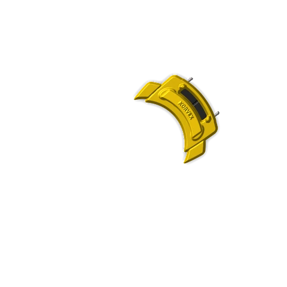
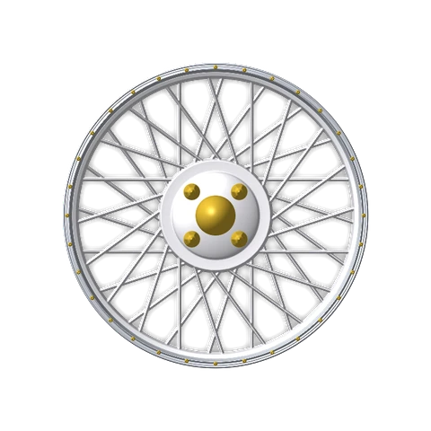

A largada começa antes da pista.
Um jogo sobre montar, entender e conduzir um carro que reage do motor ao asfalto. O Gol GTI 1994 é o veículo de referência do projeto.
Pré-alfa · Recursos sujeitos a testes e mudanças



Mais do que uma corrida em linha reta.
O interesse está nas escolhas antes da luz verde e nas consequências durante a puxada: partida, transmissão, aderência, calor e a forma como o carro comunica tudo isso a quem dirige.
Os sistemas estão em estágios diferentes. O site distingue o que já tem base no projeto daquilo que ainda é teste ou plano.
Explorar as áreas do jogoDo motor à cabine.
Uma porta de entrada para cada parte do carro.
O que move
Motor, combustível e transmissão.
↗02 / ContatoO que segura
Rodas, pneus, suspensão e freios.
↗03 / ExperiênciaO que você percebe
Painéis dos carros, áudio e sensação de condução.
↗O projeto está vivo. O status também.
Há comportamentos implementados, efeitos aproximados e recursos que ainda estão no papel. O painel de status mostra essa diferença sem transformar um teste em promessa.
Da oficina para a comunidade.
O diário reúne as atualizações do projeto. Vídeos e novas demonstrações aparecem no canal oficial quando estão prontos para mostrar.